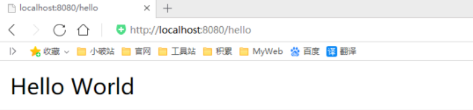
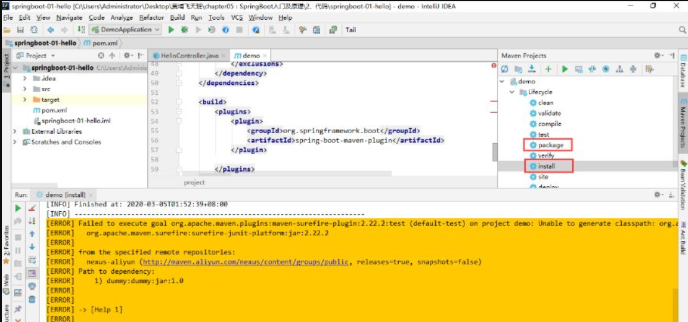
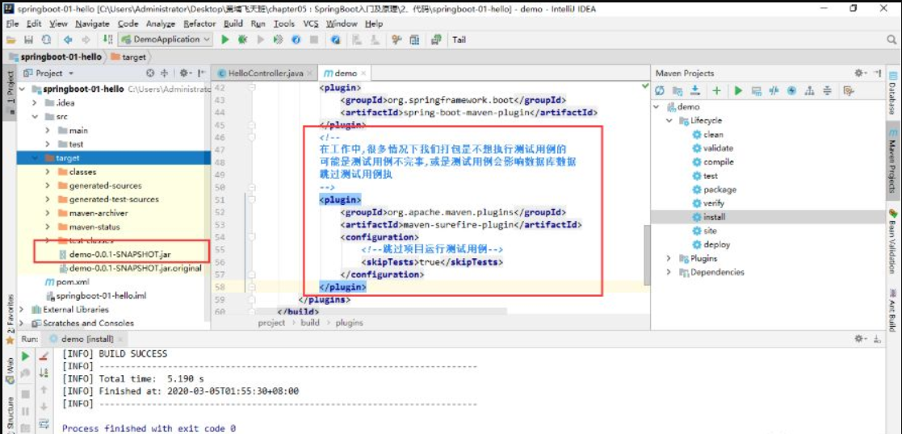

<!DOCTYPE html>
<html lang="en">

<head>
  <meta charset="utf-8" />
    
  <meta name="viewport" content="width=device-width, initial-scale=1, maximum-scale=1" />
  <title>
     犬来八荒
  </title>
  <meta name="generator" content="hexo-theme-yilia-plus">
  
  <link rel="shortcut icon" href="/favicon.ico" />
  
  
<link rel="stylesheet" href="/css/main.css">

  
<script src="/js/pace.min.js"></script>


  

  

</head>

</html>

<body>
  <div id="app">
    <main class="content">
      
<section class="cover">
    
  <div class="cover-frame">
    <div class="bg-box">
      
    </div>
    <div class="cover-inner text-center text-white">
      <h1><a href="/">犬来八荒</a></h1>
      <div id="subtitle-box">
        
        <span id="subtitle"></span>
        
      </div>
      <div>
        
      </div>
    </div>
  </div>
  <div class="cover-learn-more">
    <a href="javascript:void(0)" class="anchor"><i class="ri-arrow-down-line"></i></a>
  </div>
</section>


<script src="https://cdn.jsdelivr.net/npm/typed.js@2.0.11/lib/typed.min.js"></script>

<div id="main">
  <section class="outer">
  <article class="articles">
    
    
    
    
    <article id="post-成果也是诸葛大力" class="article article-type-post" itemscope
  itemprop="blogPost" data-scroll-reveal>

  <div class="article-inner">
    
    <header class="article-header">
       
<h2 itemprop="name">
  <a class="article-title" href="/2020/03/04/%E6%88%90%E6%9E%9C%E4%B9%9F%E6%98%AF%E8%AF%B8%E8%91%9B%E5%A4%A7%E5%8A%9B/"
    >成果也是诸葛大力</a
  >
</h2>
 
<div class="article-topping">
  <i class="ri-umbrella-line"></i>
</div>
 

    </header>
    

    
    <div class="article-meta">
      <a href="/2020/03/04/%E6%88%90%E6%9E%9C%E4%B9%9F%E6%98%AF%E8%AF%B8%E8%91%9B%E5%A4%A7%E5%8A%9B/" class="article-date">
  <time datetime="2020-03-04T13:10:47.000Z" itemprop="datePublished">2020-03-04</time>
</a>
      
  <div class="article-category">
    <a class="article-category-link" href="/categories/%E9%93%B6%E6%B2%B3-%E5%A4%AA%E9%98%B3%E7%B3%BB-%E5%9C%B0%E7%90%83/">-银河 -太阳系 -地球</a>
  </div>

      
      
      
    </div>
    

    

    
    <div class="article-entry" itemprop="articleBody">
      


      

      
      <p></p>
<p></p>
<p></p>

      
      <!-- reward -->
      
    </div>
    
    
      <!-- copyright -->
      
    <footer class="article-footer">
      
      
  <ul class="article-tag-list" itemprop="keywords"><li class="article-tag-list-item"><a class="article-tag-list-link" href="/tags/%E5%A5%B3%E7%A5%9E-%E6%BC%94%E5%91%98-%E7%88%B1%E6%83%85%E5%85%AC%E5%AF%935/" rel="tag">-女神 -演员 -爱情公寓5</a></li></ul>


    </footer>

  </div>

  

  
  
  

  

</article>
    
    <article id="post-SpringBoot01：Hello-World！" class="article article-type-post" itemscope
  itemprop="blogPost" data-scroll-reveal>

  <div class="article-inner">
    
    <header class="article-header">
       
<h2 itemprop="name">
  <a class="article-title" href="/2020/04/01/SpringBoot01%EF%BC%9AHello-World%EF%BC%81/"
    >SpringBoot01：Hello,World！</a
  >
</h2>
  

    </header>
    

    
    <div class="article-meta">
      <a href="/2020/04/01/SpringBoot01%EF%BC%9AHello-World%EF%BC%81/" class="article-date">
  <time datetime="2020-04-01T03:24:30.000Z" itemprop="datePublished">2020-04-01</time>
</a>
      
      
      
      
    </div>
    

    

    
    <div class="article-entry" itemprop="articleBody">
      


      

      
      <h2 id="回顾什么是Spring"><a href="#回顾什么是Spring" class="headerlink" title="回顾什么是Spring"></a>回顾什么是Spring</h2><p>Spring是一个开源框架，2003 年兴起的一个轻量级的Java 开发框架，作者：Rod Johnson  。</p>
<p><strong>Spring是为了解决企业级应用开发的复杂性而创建的，简化开发。</strong></p>
<h2 id="Spring是如何简化Java开发的"><a href="#Spring是如何简化Java开发的" class="headerlink" title="Spring是如何简化Java开发的"></a>Spring是如何简化Java开发的</h2><p>为了降低Java开发的复杂性，Spring采用了以下4种关键策略：</p>
<p>1、基于POJO的轻量级和最小侵入性编程，所有东西都是bean；</p>
<p>2、通过IOC，依赖注入（DI）和面向接口实现松耦合；</p>
<p>3、基于切面（AOP）和惯例进行声明式编程；</p>
<p>4、通过切面和模版减少样式代码，RedisTemplate，xxxTemplate；</p>
<h2 id="什么是SpringBoot"><a href="#什么是SpringBoot" class="headerlink" title="什么是SpringBoot"></a>什么是SpringBoot</h2><p>学过javaweb的同学就知道，开发一个web应用，从最初开始接触Servlet结合Tomcat, 跑出一个Hello Wolrld程序，是要经历特别多的步骤；后来就用了框架Struts，再后来是SpringMVC，到了现在的SpringBoot，过一两年又会有其他web框架出现；你们有经历过框架不断的演进，然后自己开发项目所有的技术也在不断的变化、改造吗？建议都可以去经历一遍；</p>
<p>言归正传，什么是SpringBoot呢，就是一个javaweb的开发框架，和SpringMVC类似，对比其他javaweb框架的好处，官方说是简化开发，约定大于配置，  you can “just run”，能迅速的开发web应用，几行代码开发一个http接口。</p>
<p>所有的技术框架的发展似乎都遵循了一条主线规律：从一个复杂应用场景 衍生 一种规范框架，人们只需要进行各种配置而不需要自己去实现它，这时候强大的配置功能成了优点；发展到一定程度之后，人们根据实际生产应用情况，选取其中实用功能和设计精华，重构出一些轻量级的框架；之后为了提高开发效率，嫌弃原先的各类配置过于麻烦，于是开始提倡“约定大于配置”，进而衍生出一些一站式的解决方案。</p>
<p>是的这就是Java企业级应用-&gt;J2EE-&gt;spring-&gt;springboot的过程。</p>
<p>随着 Spring 不断的发展，涉及的领域越来越多，项目整合开发需要配合各种各样的文件，慢慢变得不那么易用简单，违背了最初的理念，甚至人称配置地狱。Spring Boot 正是在这样的一个背景下被抽象出来的开发框架，目的为了让大家更容易的使用 Spring 、更容易的集成各种常用的中间件、开源软件；</p>
<p>Spring Boot 基于 Spring 开发，Spirng Boot 本身并不提供 Spring 框架的核心特性以及扩展功能，只是用于快速、敏捷地开发新一代基于 Spring 框架的应用程序。也就是说，它并不是用来替代 Spring 的解决方案，而是和 Spring 框架紧密结合用于提升 Spring 开发者体验的工具。Spring Boot 以<strong>约定大于配置的核心思想</strong>，默认帮我们进行了很多设置，多数 Spring Boot 应用只需要很少的 Spring 配置。同时它集成了大量常用的第三方库配置（例如 Redis、MongoDB、Jpa、RabbitMQ、Quartz 等等），Spring Boot 应用中这些第三方库几乎可以零配置的开箱即用。</p>
<p>简单来说就是SpringBoot其实不是什么新的框架，它默认配置了很多框架的使用方式，就像maven整合了所有的jar包，spring boot整合了所有的框架 。</p>
<p>Spring Boot 出生名门，从一开始就站在一个比较高的起点，又经过这几年的发展，生态足够完善，Spring Boot 已经当之无愧成为 Java 领域最热门的技术。</p>
<p><strong>Spring Boot的主要优点：</strong></p>
<ul>
<li>为所有Spring开发者更快的入门</li>
<li><strong>开箱即用</strong>，提供各种默认配置来简化项目配置</li>
<li>内嵌式容器简化Web项目</li>
<li>没有冗余代码生成和XML配置的要求</li>
</ul>
<p>真的很爽，我们快速去体验开发个接口的感觉吧！</p>
<h1 id="Hello-World"><a href="#Hello-World" class="headerlink" title="Hello World"></a>Hello World</h1><h2 id="准备工作"><a href="#准备工作" class="headerlink" title="准备工作"></a>准备工作</h2><p>我们将学习如何快速的创建一个Spring Boot应用，并且实现一个简单的Http请求处理。通过这个例子对Spring Boot有一个初步的了解，并体验其结构简单、开发快速的特性。</p>
<p>我的环境准备：</p>
<ul>
<li>java version “1.8.0_181”</li>
<li>Maven-3.6.1</li>
<li>SpringBoot 2.x 最新版</li>
</ul>
<p>开发工具：</p>
<ul>
<li>IDEA</li>
</ul>
<h2 id="创建基础项目说明"><a href="#创建基础项目说明" class="headerlink" title="创建基础项目说明"></a>创建基础项目说明</h2><p>Spring官方提供了非常方便的工具让我们快速构建应用</p>
<p>Spring Initializr：<a href="https://start.spring.io/" target="_blank" rel="noopener">https://start.spring.io/</a></p>
<p><strong>项目创建方式一：</strong>使用Spring Initializr 的 Web页面创建项目</p>
<p>1、打开  <a href="https://start.spring.io/" target="_blank" rel="noopener">https://start.spring.io/</a></p>
<p>2、填写项目信息</p>
<p>3、点击”Generate Project“按钮生成项目；下载此项目</p>
<p>4、解压项目包，并用IDEA以Maven项目导入，一路下一步即可，直到项目导入完毕。</p>
<p>5、如果是第一次使用，可能速度会比较慢，包比较多、需要耐心等待一切就绪。</p>
<p><strong>项目创建方式二：</strong>使用 IDEA 直接创建项目</p>
<p>1、创建一个新项目</p>
<p>2、选择spring initalizr ， 可以看到默认就是去官网的快速构建工具那里实现</p>
<p>3、填写项目信息</p>
<p>4、选择初始化的组件（初学勾选 Web 即可）</p>
<p>5、填写项目路径</p>
<p>6、等待项目构建成功</p>
<p><strong>项目结构分析：</strong></p>
<p>通过上面步骤完成了基础项目的创建。就会自动生成以下文件。</p>
<p>1、程序的主启动类</p>
<p>2、一个 application.properties 配置文件</p>
<p>3、一个 测试类</p>
<p>4、一个 pom.xml</p>
<blockquote>
<p>  pom.xml分析</p>
</blockquote>
<p>打开pom.xml，看看Spring Boot项目的依赖：</p>
<figure class="highlight xml"><table><tr><td class="gutter"><pre><span class="line">1</span><br><span class="line">2</span><br><span class="line">3</span><br><span class="line">4</span><br><span class="line">5</span><br><span class="line">6</span><br><span class="line">7</span><br><span class="line">8</span><br><span class="line">9</span><br><span class="line">10</span><br><span class="line">11</span><br><span class="line">12</span><br><span class="line">13</span><br><span class="line">14</span><br><span class="line">15</span><br><span class="line">16</span><br><span class="line">17</span><br><span class="line">18</span><br><span class="line">19</span><br><span class="line">20</span><br><span class="line">21</span><br><span class="line">22</span><br><span class="line">23</span><br><span class="line">24</span><br><span class="line">25</span><br><span class="line">26</span><br><span class="line">27</span><br><span class="line">28</span><br><span class="line">29</span><br><span class="line">30</span><br><span class="line">31</span><br><span class="line">32</span><br><span class="line">33</span><br><span class="line">34</span><br><span class="line">35</span><br><span class="line">36</span><br><span class="line">37</span><br><span class="line">38</span><br></pre></td><td class="code"><pre><span class="line"><span class="comment">&lt;!-- 父依赖 --&gt;</span></span><br><span class="line"><span class="tag">&lt;<span class="name">parent</span>&gt;</span></span><br><span class="line">    <span class="tag">&lt;<span class="name">groupId</span>&gt;</span>org.springframework.boot<span class="tag">&lt;/<span class="name">groupId</span>&gt;</span></span><br><span class="line">    <span class="tag">&lt;<span class="name">artifactId</span>&gt;</span>spring-boot-starter-parent<span class="tag">&lt;/<span class="name">artifactId</span>&gt;</span></span><br><span class="line">    <span class="tag">&lt;<span class="name">version</span>&gt;</span>2.2.5.RELEASE<span class="tag">&lt;/<span class="name">version</span>&gt;</span></span><br><span class="line">    <span class="tag">&lt;<span class="name">relativePath</span>/&gt;</span></span><br><span class="line"><span class="tag">&lt;/<span class="name">parent</span>&gt;</span></span><br><span class="line"></span><br><span class="line"><span class="tag">&lt;<span class="name">dependencies</span>&gt;</span></span><br><span class="line">    <span class="comment">&lt;!-- web场景启动器 --&gt;</span></span><br><span class="line">    <span class="tag">&lt;<span class="name">dependency</span>&gt;</span></span><br><span class="line">        <span class="tag">&lt;<span class="name">groupId</span>&gt;</span>org.springframework.boot<span class="tag">&lt;/<span class="name">groupId</span>&gt;</span></span><br><span class="line">        <span class="tag">&lt;<span class="name">artifactId</span>&gt;</span>spring-boot-starter-web<span class="tag">&lt;/<span class="name">artifactId</span>&gt;</span></span><br><span class="line">    <span class="tag">&lt;/<span class="name">dependency</span>&gt;</span></span><br><span class="line">    <span class="comment">&lt;!-- springboot单元测试 --&gt;</span></span><br><span class="line">    <span class="tag">&lt;<span class="name">dependency</span>&gt;</span></span><br><span class="line">        <span class="tag">&lt;<span class="name">groupId</span>&gt;</span>org.springframework.boot<span class="tag">&lt;/<span class="name">groupId</span>&gt;</span></span><br><span class="line">        <span class="tag">&lt;<span class="name">artifactId</span>&gt;</span>spring-boot-starter-test<span class="tag">&lt;/<span class="name">artifactId</span>&gt;</span></span><br><span class="line">        <span class="tag">&lt;<span class="name">scope</span>&gt;</span>test<span class="tag">&lt;/<span class="name">scope</span>&gt;</span></span><br><span class="line">        <span class="comment">&lt;!-- 剔除依赖 --&gt;</span></span><br><span class="line">        <span class="tag">&lt;<span class="name">exclusions</span>&gt;</span></span><br><span class="line">            <span class="tag">&lt;<span class="name">exclusion</span>&gt;</span></span><br><span class="line">                <span class="tag">&lt;<span class="name">groupId</span>&gt;</span>org.junit.vintage<span class="tag">&lt;/<span class="name">groupId</span>&gt;</span></span><br><span class="line">                <span class="tag">&lt;<span class="name">artifactId</span>&gt;</span>junit-vintage-engine<span class="tag">&lt;/<span class="name">artifactId</span>&gt;</span></span><br><span class="line">            <span class="tag">&lt;/<span class="name">exclusion</span>&gt;</span></span><br><span class="line">        <span class="tag">&lt;/<span class="name">exclusions</span>&gt;</span></span><br><span class="line">    <span class="tag">&lt;/<span class="name">dependency</span>&gt;</span></span><br><span class="line"><span class="tag">&lt;/<span class="name">dependencies</span>&gt;</span></span><br><span class="line"></span><br><span class="line"><span class="tag">&lt;<span class="name">build</span>&gt;</span></span><br><span class="line">    <span class="tag">&lt;<span class="name">plugins</span>&gt;</span></span><br><span class="line">        <span class="comment">&lt;!-- 打包插件 --&gt;</span></span><br><span class="line">        <span class="tag">&lt;<span class="name">plugin</span>&gt;</span></span><br><span class="line">            <span class="tag">&lt;<span class="name">groupId</span>&gt;</span>org.springframework.boot<span class="tag">&lt;/<span class="name">groupId</span>&gt;</span></span><br><span class="line">            <span class="tag">&lt;<span class="name">artifactId</span>&gt;</span>spring-boot-maven-plugin<span class="tag">&lt;/<span class="name">artifactId</span>&gt;</span></span><br><span class="line">        <span class="tag">&lt;/<span class="name">plugin</span>&gt;</span></span><br><span class="line">    <span class="tag">&lt;/<span class="name">plugins</span>&gt;</span></span><br><span class="line"><span class="tag">&lt;/<span class="name">build</span>&gt;</span></span><br></pre></td></tr></table></figure>

<blockquote>
<p>  编写一个http接口</p>
</blockquote>
<p>1、在主程序的同级目录下，新建一个controller包，一定要在同级目录下，否则识别不到</p>
<p>2、在包中新建一个HelloController类</p>
<figure class="highlight java"><table><tr><td class="gutter"><pre><span class="line">1</span><br><span class="line">2</span><br><span class="line">3</span><br><span class="line">4</span><br><span class="line">5</span><br><span class="line">6</span><br><span class="line">7</span><br><span class="line">8</span><br><span class="line">9</span><br></pre></td><td class="code"><pre><span class="line"><span class="meta">@RestController</span></span><br><span class="line"><span class="keyword">public</span> <span class="class"><span class="keyword">class</span> <span class="title">HelloController</span> </span>&#123;</span><br><span class="line"></span><br><span class="line">    <span class="meta">@RequestMapping</span>(<span class="string">"/hello"</span>)</span><br><span class="line">    <span class="function"><span class="keyword">public</span> String <span class="title">hello</span><span class="params">()</span> </span>&#123;</span><br><span class="line">        <span class="keyword">return</span> <span class="string">"Hello World"</span>;</span><br><span class="line">    &#125;</span><br><span class="line">    </span><br><span class="line">&#125;</span><br></pre></td></tr></table></figure>

<p>3、编写完毕后，从主程序启动项目，浏览器发起请求，看页面返回；控制台输出了 Tomcat 访问的端口号！</p>
<p></p>
<p>简单几步，就完成了一个web接口的开发，SpringBoot就是这么简单。所以我们常用它来建立我们的微服务项目！</p>
<blockquote>
<p>  将项目打成jar包，点击 maven的 package</p>
</blockquote>
<p></p>
<p>如果遇到以上错误，可以配置打包时 跳过项目运行测试用例</p>
<figure class="highlight xml"><table><tr><td class="gutter"><pre><span class="line">1</span><br><span class="line">2</span><br><span class="line">3</span><br><span class="line">4</span><br><span class="line">5</span><br><span class="line">6</span><br><span class="line">7</span><br><span class="line">8</span><br><span class="line">9</span><br><span class="line">10</span><br><span class="line">11</span><br><span class="line">12</span><br><span class="line">13</span><br></pre></td><td class="code"><pre><span class="line"><span class="comment">&lt;!--</span></span><br><span class="line"><span class="comment">    在工作中,很多情况下我们打包是不想执行测试用例的</span></span><br><span class="line"><span class="comment">    可能是测试用例不完事,或是测试用例会影响数据库数据</span></span><br><span class="line"><span class="comment">    跳过测试用例执</span></span><br><span class="line"><span class="comment">    --&gt;</span></span><br><span class="line"><span class="tag">&lt;<span class="name">plugin</span>&gt;</span></span><br><span class="line">    <span class="tag">&lt;<span class="name">groupId</span>&gt;</span>org.apache.maven.plugins<span class="tag">&lt;/<span class="name">groupId</span>&gt;</span></span><br><span class="line">    <span class="tag">&lt;<span class="name">artifactId</span>&gt;</span>maven-surefire-plugin<span class="tag">&lt;/<span class="name">artifactId</span>&gt;</span></span><br><span class="line">    <span class="tag">&lt;<span class="name">configuration</span>&gt;</span></span><br><span class="line">        <span class="comment">&lt;!--跳过项目运行测试用例--&gt;</span></span><br><span class="line">        <span class="tag">&lt;<span class="name">skipTests</span>&gt;</span>true<span class="tag">&lt;/<span class="name">skipTests</span>&gt;</span></span><br><span class="line">    <span class="tag">&lt;/<span class="name">configuration</span>&gt;</span></span><br><span class="line"><span class="tag">&lt;/<span class="name">plugin</span>&gt;</span></span><br></pre></td></tr></table></figure>

<p>如果打包成功，则会在target目录下生成一个 jar 包</p>
<p></p>
<p>打成了jar包后，就可以在任何地方运行了！OK</p>
<h3 id="小彩蛋"><a href="#小彩蛋" class="headerlink" title="小彩蛋"></a>小彩蛋</h3><p>如何更改启动时显示的字符拼成的字母，SpringBoot呢？也就是 banner 图案；</p>
<p>只需一步：到项目下的 resources 目录下新建一个banner.txt 即可。</p>
<p>图案可以到：<a href="https://www.bootschool.net/ascii" target="_blank" rel="noopener">https://www.bootschool.net/ascii</a> 这个网站生成，然后拷贝到文件中即可！</p>

      
      <!-- reward -->
      
    </div>
    
    
      <!-- copyright -->
      
    <footer class="article-footer">
      
      
  <ul class="article-tag-list" itemprop="keywords"><li class="article-tag-list-item"><a class="article-tag-list-link" href="/tags/Spring/" rel="tag">Spring</a></li></ul>


    </footer>

  </div>

  

  
  
  

  

</article>
    
    <article id="post-Java学习路线" class="article article-type-post" itemscope
  itemprop="blogPost" data-scroll-reveal>

  <div class="article-inner">
    
    <header class="article-header">
       
<h2 itemprop="name">
  <a class="article-title" href="/2020/04/01/Java%E5%AD%A6%E4%B9%A0%E8%B7%AF%E7%BA%BF/"
    >Java学习路线</a
  >
</h2>
  

    </header>
    

    
    <div class="article-meta">
      <a href="/2020/04/01/Java%E5%AD%A6%E4%B9%A0%E8%B7%AF%E7%BA%BF/" class="article-date">
  <time datetime="2020-04-01T03:01:06.000Z" itemprop="datePublished">2020-04-01</time>
</a>
      
      
      
      
    </div>
    

    

    
    <div class="article-entry" itemprop="articleBody">
      


      

      
      <p></p>
<p></p>
<p></p>
<p></p>
<p></p>
<p></p>
<p></p>
<h2 id="写在最后"><a href="#写在最后" class="headerlink" title="写在最后"></a>写在最后</h2><p>成为一个合格的工程师需要 1~3 年时间，最好的学习方法就是找经典的书籍系统地学习，而不要遇到一个问题到网上搜搜然后就解决了事。例如 Java 的各种数据结构的实现原理，因为只有深入掌握了这些实现原理，才能对其优缺点和使用场景有深刻理解，这样在做具体方案设计的时候才能选择合适的数据结构。</p>
<p>针对技术深度，我的建议还是系统地学习，包括看书和研究源码。例如，研究 Java 虚拟机可以看《深入理解 Java 虚拟机》、研究 MySQL 可以看《MySQL 技术内幕：InnoDB 存储引擎》、研究 Memcache 可以去看其源码。</p>

      
      <!-- reward -->
      
    </div>
    
    
      <!-- copyright -->
      
    <footer class="article-footer">
      
      

    </footer>

  </div>

  

  
  
  

  

</article>
    
    <article id="post-再读Response" class="article article-type-post" itemscope
  itemprop="blogPost" data-scroll-reveal>

  <div class="article-inner">
    
    <header class="article-header">
       
<h2 itemprop="name">
  <a class="article-title" href="/2020/03/28/%E5%86%8D%E8%AF%BBResponse/"
    >再读Response——源生验证码</a
  >
</h2>
  

    </header>
    

    
    <div class="article-meta">
      <a href="/2020/03/28/%E5%86%8D%E8%AF%BBResponse/" class="article-date">
  <time datetime="2020-03-28T14:06:27.000Z" itemprop="datePublished">2020-03-28</time>
</a>
      
      
      
      
    </div>
    

    

    
    <div class="article-entry" itemprop="articleBody">
      


      

      
      <p>源生代码Response请求返回一个简洁的验证码</p>
<figure class="highlight java"><table><tr><td class="gutter"><pre><span class="line">1</span><br><span class="line">2</span><br><span class="line">3</span><br><span class="line">4</span><br><span class="line">5</span><br><span class="line">6</span><br><span class="line">7</span><br><span class="line">8</span><br><span class="line">9</span><br><span class="line">10</span><br><span class="line">11</span><br><span class="line">12</span><br><span class="line">13</span><br><span class="line">14</span><br><span class="line">15</span><br><span class="line">16</span><br><span class="line">17</span><br><span class="line">18</span><br><span class="line">19</span><br><span class="line">20</span><br><span class="line">21</span><br><span class="line">22</span><br><span class="line">23</span><br><span class="line">24</span><br><span class="line">25</span><br><span class="line">26</span><br><span class="line">27</span><br><span class="line">28</span><br><span class="line">29</span><br><span class="line">30</span><br><span class="line">31</span><br><span class="line">32</span><br><span class="line">33</span><br><span class="line">34</span><br><span class="line">35</span><br><span class="line">36</span><br><span class="line">37</span><br><span class="line">38</span><br><span class="line">39</span><br><span class="line">40</span><br><span class="line">41</span><br><span class="line">42</span><br><span class="line">43</span><br><span class="line">44</span><br><span class="line">45</span><br><span class="line">46</span><br><span class="line">47</span><br><span class="line">48</span><br><span class="line">49</span><br><span class="line">50</span><br><span class="line">51</span><br><span class="line">52</span><br><span class="line">53</span><br><span class="line">54</span><br><span class="line">55</span><br><span class="line">56</span><br><span class="line">57</span><br><span class="line">58</span><br><span class="line">59</span><br><span class="line">60</span><br><span class="line">61</span><br></pre></td><td class="code"><pre><span class="line"><span class="keyword">package</span> com.li.response;</span><br><span class="line"></span><br><span class="line"><span class="keyword">import</span> javax.imageio.ImageIO;</span><br><span class="line"><span class="keyword">import</span> javax.imageio.stream.ImageOutputStream;</span><br><span class="line"><span class="keyword">import</span> javax.servlet.ServletException;</span><br><span class="line"><span class="keyword">import</span> javax.servlet.http.HttpServlet;</span><br><span class="line"><span class="keyword">import</span> javax.servlet.http.HttpServletRequest;</span><br><span class="line"><span class="keyword">import</span> javax.servlet.http.HttpServletResponse;</span><br><span class="line"><span class="keyword">import</span> java.awt.*;</span><br><span class="line"><span class="keyword">import</span> java.awt.image.BufferedImage;</span><br><span class="line"><span class="keyword">import</span> java.io.IOException;</span><br><span class="line"><span class="keyword">import</span> java.io.OutputStream;</span><br><span class="line"><span class="keyword">import</span> java.util.Random;</span><br><span class="line"></span><br><span class="line"><span class="keyword">public</span> <span class="class"><span class="keyword">class</span> <span class="title">ImageServlet</span> <span class="keyword">extends</span> <span class="title">HttpServlet</span> </span>&#123;</span><br><span class="line">    <span class="meta">@Override</span></span><br><span class="line">    <span class="function"><span class="keyword">protected</span> <span class="keyword">void</span> <span class="title">doGet</span><span class="params">(HttpServletRequest req, HttpServletResponse resp)</span> <span class="keyword">throws</span> ServletException, IOException </span>&#123;</span><br><span class="line">        <span class="comment">//3s刷新一次浏览器</span></span><br><span class="line">        resp.setHeader(<span class="string">"refresh"</span>,<span class="string">"2"</span>);</span><br><span class="line">        <span class="comment">//在内存中创建一个图片</span></span><br><span class="line">        BufferedImage image = <span class="keyword">new</span> BufferedImage(<span class="number">180</span>, <span class="number">40</span>, BufferedImage.TYPE_INT_RGB);</span><br><span class="line">        <span class="comment">//得到图片</span></span><br><span class="line">        Graphics2D g = (Graphics2D) image.getGraphics();<span class="comment">//一支笔</span></span><br><span class="line">        <span class="comment">//设置白色背景</span></span><br><span class="line">        g.setBackground(Color.white);</span><br><span class="line">        g.fillRect(<span class="number">0</span>,<span class="number">0</span>,<span class="number">180</span>,<span class="number">40</span>);</span><br><span class="line">        <span class="comment">//给图片写数据</span></span><br><span class="line">        g.setColor(Color.blue);</span><br><span class="line">        g.setFont(<span class="keyword">new</span> Font(<span class="keyword">null</span>,Font.BOLD,<span class="number">40</span>));</span><br><span class="line">        g.drawString(makeNum(),<span class="number">0</span>,<span class="number">40</span>);</span><br><span class="line"></span><br><span class="line">        <span class="comment">//告诉浏览器，以图片的形式打开请求</span></span><br><span class="line">        resp.setContentType(<span class="string">"image/jpeg"</span>);</span><br><span class="line">        <span class="comment">//杀死缓存</span></span><br><span class="line">        resp.setDateHeader(<span class="string">"expires"</span>,-<span class="number">1</span>);</span><br><span class="line">        resp.setHeader(<span class="string">"Cache-Control"</span>,<span class="string">"no-cache"</span>);</span><br><span class="line">        resp.setHeader(<span class="string">"Pragma"</span>,<span class="string">"no-cache"</span>);</span><br><span class="line"></span><br><span class="line">        <span class="comment">//把图片写进浏览器</span></span><br><span class="line">        ImageIO.write(image,<span class="string">"jpg"</span>,resp.getOutputStream());</span><br><span class="line"></span><br><span class="line">    &#125;</span><br><span class="line"></span><br><span class="line">    <span class="comment">//生成随机数</span></span><br><span class="line"></span><br><span class="line">    <span class="function"><span class="keyword">private</span> String <span class="title">makeNum</span><span class="params">()</span></span>&#123;</span><br><span class="line">        Random random = <span class="keyword">new</span> Random();</span><br><span class="line">        String num = random.nextInt(<span class="number">9999999</span>) + <span class="string">""</span>;</span><br><span class="line">        StringBuffer sb = <span class="keyword">new</span> StringBuffer();</span><br><span class="line">        <span class="comment">//保证生成的随机数必定是7位数，不足位填充0</span></span><br><span class="line">        <span class="keyword">for</span> (<span class="keyword">int</span> i = <span class="number">0</span>; i &lt; <span class="number">7</span>-num.length();i++)&#123;</span><br><span class="line">            sb.append(<span class="number">0</span>);</span><br><span class="line">        &#125;</span><br><span class="line">        num = sb.toString() + num;</span><br><span class="line">        <span class="keyword">return</span> num;</span><br><span class="line">    &#125;</span><br><span class="line">    <span class="meta">@Override</span></span><br><span class="line">    <span class="function"><span class="keyword">protected</span> <span class="keyword">void</span> <span class="title">doPost</span><span class="params">(HttpServletRequest req, HttpServletResponse resp)</span> <span class="keyword">throws</span> ServletException, IOException </span>&#123;</span><br><span class="line">        <span class="keyword">super</span>.doPost(req, resp);</span><br><span class="line">    &#125;</span><br><span class="line">&#125;</span><br></pre></td></tr></table></figure>


<p>测试别忘了注册servlet和servlet-mapping</p>

      
      <!-- reward -->
      
    </div>
    
    
      <!-- copyright -->
      
    <footer class="article-footer">
      
      

    </footer>

  </div>

  

  
  
  

  

</article>
    
    <article id="post-如何给老婆解释什么是Restful" class="article article-type-post" itemscope
  itemprop="blogPost" data-scroll-reveal>

  <div class="article-inner">
    
    <header class="article-header">
       
<h2 itemprop="name">
  <a class="article-title" href="/2020/03/28/%E5%A6%82%E4%BD%95%E7%BB%99%E8%80%81%E5%A9%86%E8%A7%A3%E9%87%8A%E4%BB%80%E4%B9%88%E6%98%AFRestful/"
    >如何给老婆解释什么是Restful</a
  >
</h2>
  

    </header>
    

    
    <div class="article-meta">
      <a href="/2020/03/28/%E5%A6%82%E4%BD%95%E7%BB%99%E8%80%81%E5%A9%86%E8%A7%A3%E9%87%8A%E4%BB%80%E4%B9%88%E6%98%AFRestful/" class="article-date">
  <time datetime="2020-03-28T12:48:36.000Z" itemprop="datePublished">2020-03-28</time>
</a>
      
      
      
      
    </div>
    

    

    
    <div class="article-entry" itemprop="articleBody">
      


      

      
      <p>老婆经常喜欢翻看我订阅的技术杂志，她总能从她的视角提出很多有趣的问题。</p>
<p>一个悠闲的周日下午，她午觉醒来，又习惯性的抓起这个月的杂志，饶有兴趣地看了起来。</p>
<p>果不其然，看着看着，她又对我发难了，“Restful是什么呀，老公？是restaurant的形容词吗，突然就觉得好饿了啊……”</p>
      
      <a class="article-more-link" href="/2020/03/28/%E5%A6%82%E4%BD%95%E7%BB%99%E8%80%81%E5%A9%86%E8%A7%A3%E9%87%8A%E4%BB%80%E4%B9%88%E6%98%AFRestful/">阅读更多...</a>
      
      
      <!-- reward -->
      
    </div>
    
    
      <!-- copyright -->
      
    <footer class="article-footer">
      
      

    </footer>

  </div>

  

  
  
  

  

</article>
    
    <article id="post-怎样优雅的自定义Typora" class="article article-type-post" itemscope
  itemprop="blogPost" data-scroll-reveal>

  <div class="article-inner">
    
    <header class="article-header">
       
<h2 itemprop="name">
  <a class="article-title" href="/2020/03/28/%E6%80%8E%E6%A0%B7%E4%BC%98%E9%9B%85%E7%9A%84%E8%87%AA%E5%AE%9A%E4%B9%89Typora/"
    >怎样优雅的自定义Typora</a
  >
</h2>
  

    </header>
    

    
    <div class="article-meta">
      <a href="/2020/03/28/%E6%80%8E%E6%A0%B7%E4%BC%98%E9%9B%85%E7%9A%84%E8%87%AA%E5%AE%9A%E4%B9%89Typora/" class="article-date">
  <time datetime="2020-03-28T11:30:16.000Z" itemprop="datePublished">2020-03-28</time>
</a>
      
      
      
      
    </div>
    

    

    
    <div class="article-entry" itemprop="articleBody">
      


      

      
      <h1 id="更改所有文本字体"><a href="#更改所有文本字体" class="headerlink" title="更改所有文本字体"></a>更改所有文本字体</h1><ol>
<li><p>找到你的主题路径，例如我的：C:\Users\17159\AppData\Roaming\Typora\themes</p>
</li>
<li><p>找到你想重置的主题css文件，例如我的：solarized.css</p>
</li>
<li><p>ctrl+f 替换所有的 <strong>font-family</strong> 为 <strong>font-family: ‘新字体’,</strong> 例如我的<strong>‘Open Sans’</strong>,所以我把全局的 <strong>font-family</strong> 替换为 <strong>font-family: ‘Open Sans’,</strong></p>
</li>
<li><p>同理可证其他的主体其他的样式</p>
</li>
</ol>

      
      <!-- reward -->
      
    </div>
    
    
      <!-- copyright -->
      
    <footer class="article-footer">
      
      

    </footer>

  </div>

  

  
  
  

  

</article>
    
    <article id="post-怎样优雅的自定义Typora呢" class="article article-type-post" itemscope
  itemprop="blogPost" data-scroll-reveal>

  <div class="article-inner">
    
    <header class="article-header">
       
<h2 itemprop="name">
  <a class="article-title" href="/2020/03/28/%E6%80%8E%E6%A0%B7%E4%BC%98%E9%9B%85%E7%9A%84%E8%87%AA%E5%AE%9A%E4%B9%89Typora%E5%91%A2/"
    >怎样优雅的自定义Typora</a
  >
</h2>
  

    </header>
    

    
    <div class="article-meta">
      <a href="/2020/03/28/%E6%80%8E%E6%A0%B7%E4%BC%98%E9%9B%85%E7%9A%84%E8%87%AA%E5%AE%9A%E4%B9%89Typora%E5%91%A2/" class="article-date">
  <time datetime="2020-03-28T11:30:16.000Z" itemprop="datePublished">2020-03-28</time>
</a>
      
      
      
      
    </div>
    

    

    
    <div class="article-entry" itemprop="articleBody">
      


      

      
      <h1 id="更改所有文本字体"><a href="#更改所有文本字体" class="headerlink" title="更改所有文本字体"></a>更改所有文本字体</h1><ol>
<li>找到你的主题路径，例如我的：C:\Users\17159\AppData\Roaming\Typora\themes</li>
<li>找到你想重置的主题css文件，例如我的：solarized.css</li>
<li>ctrl+f 替换所有的 <strong>font-family</strong> 为 <strong>font-family: ‘新字体’,</strong> 例如我的<strong>‘Open Sans’</strong>,所以我把全局的 <strong>font-family</strong> 替换为 <strong>font-family: ‘Open Sans’,</strong></li>
<li>同理可证其他的主体其他的样式</li>
</ol>

      
      <!-- reward -->
      
    </div>
    
    
      <!-- copyright -->
      
    <footer class="article-footer">
      
      

    </footer>

  </div>

  

  
  
  

  

</article>
    
    <article id="post-关于Hadoop" class="article article-type-post" itemscope
  itemprop="blogPost" data-scroll-reveal>

  <div class="article-inner">
    
    <header class="article-header">
       
<h2 itemprop="name">
  <a class="article-title" href="/2020/03/28/%E5%85%B3%E4%BA%8EHadoop/"
    >关于Hadoop</a
  >
</h2>
  

    </header>
    

    
    <div class="article-meta">
      <a href="/2020/03/28/%E5%85%B3%E4%BA%8EHadoop/" class="article-date">
  <time datetime="2020-03-28T02:40:33.000Z" itemprop="datePublished">2020-03-28</time>
</a>
      
      
      
      
    </div>
    

    

    
    <div class="article-entry" itemprop="articleBody">
      


      

      
      <p>Hadoop是一个开源框架，允许使用简单的编程模型在跨计算机集群的分布式环境中存储和处理大数据。它的设计是从单个服务器扩展到数千个机器，每个都提供本地计算和存储。</p>
<h2>Hadoop - 简介</h2>
Hadoop可运行于一般的商用服务器上，具有高容错、高可靠性、高扩展性等特点

<p>特别适合写一次，读多次的场景</p>
<p>适合<br>-大规模数据<br>-流式数据（写一次，读多次）<br>-商用硬件（一般硬件）<br>不适合<br>*低延时的数据访问<br>*大量的小文件<br>*频繁修改文件（基本就是写1次）</p>
<p>Hadoop架构<br></p>
<p>HDFS: 分布式文件存储<br>YARN: 分布式资源管理<br>MapReduce: 分布式计算<br>Others: 利用YARN的资源管理功能实现其他的数据处理方式<br>内部各个节点基本都是采用Master-Woker架构</p>
      
      <a class="article-more-link" href="/2020/03/28/%E5%85%B3%E4%BA%8EHadoop/">阅读更多...</a>
      
      
      <!-- reward -->
      
    </div>
    
    
      <!-- copyright -->
      
    <footer class="article-footer">
      
      

    </footer>

  </div>

  

  
  
  

  

</article>
    
    <article id="post-Spring：AOP-面向切面编程" class="article article-type-post" itemscope
  itemprop="blogPost" data-scroll-reveal>

  <div class="article-inner">
    
    <header class="article-header">
       
<h2 itemprop="name">
  <a class="article-title" href="/2020/03/20/Spring%EF%BC%9AAOP-%E9%9D%A2%E5%90%91%E5%88%87%E9%9D%A2%E7%BC%96%E7%A8%8B/"
    >Spring：AOP--面向切面编程</a
  >
</h2>
  

    </header>
    

    
    <div class="article-meta">
      <a href="/2020/03/20/Spring%EF%BC%9AAOP-%E9%9D%A2%E5%90%91%E5%88%87%E9%9D%A2%E7%BC%96%E7%A8%8B/" class="article-date">
  <time datetime="2020-03-20T12:18:47.000Z" itemprop="datePublished">2020-03-20</time>
</a>
      
      
      
      
    </div>
    

    

    
    <div class="article-entry" itemprop="articleBody">
      


      

      
      <h3 id="a">什么是AOP</h3>
AOP（Aspect Oriented Programming）意为：面向切面编程，通过预编译方式和运行期动态代理实现程序功能的统一维护的一种技术。AOP是OOP的延续，是软件开发中的一个热点，也是Spring框架中的一个重要内容，是函数式编程的一种衍生范型。利用AOP可以对业务逻辑的各个部分进行隔离，从而使得业务逻辑各部分之间的耦合度降低，提高程序的可重用性，同时提高了开发的效率。
      
      <a class="article-more-link" href="/2020/03/20/Spring%EF%BC%9AAOP-%E9%9D%A2%E5%90%91%E5%88%87%E9%9D%A2%E7%BC%96%E7%A8%8B/">阅读更多...</a>
      
      
      <!-- reward -->
      
    </div>
    
    
      <!-- copyright -->
      
    <footer class="article-footer">
      
      
  <ul class="article-tag-list" itemprop="keywords"><li class="article-tag-list-item"><a class="article-tag-list-link" href="/tags/Spring/" rel="tag">Spring</a></li></ul>


    </footer>

  </div>

  

  
  
  

  

</article>
    
    <article id="post-Spring：使用注解开发" class="article article-type-post" itemscope
  itemprop="blogPost" data-scroll-reveal>

  <div class="article-inner">
    
    <header class="article-header">
       
<h2 itemprop="name">
  <a class="article-title" href="/2020/03/20/Spring%EF%BC%9A%E4%BD%BF%E7%94%A8%E6%B3%A8%E8%A7%A3%E5%BC%80%E5%8F%91/"
    >Spring：使用注解开发</a
  >
</h2>
  

    </header>
    

    
    <div class="article-meta">
      <a href="/2020/03/20/Spring%EF%BC%9A%E4%BD%BF%E7%94%A8%E6%B3%A8%E8%A7%A3%E5%BC%80%E5%8F%91/" class="article-date">
  <time datetime="2020-03-20T12:05:40.000Z" itemprop="datePublished">2020-03-20</time>
</a>
      
      
      
      
    </div>
    

    

    
    <div class="article-entry" itemprop="articleBody">
      


      

      
      <h3 id="a">说明</h3>
在spring4之后，想要使用注解形式，必须得要引入aop的包

<p></p>
<p>在配置文件当中，还得要引入一个context约束</p>
      
      <a class="article-more-link" href="/2020/03/20/Spring%EF%BC%9A%E4%BD%BF%E7%94%A8%E6%B3%A8%E8%A7%A3%E5%BC%80%E5%8F%91/">阅读更多...</a>
      
      
      <!-- reward -->
      
    </div>
    
    
      <!-- copyright -->
      
    <footer class="article-footer">
      
      
  <ul class="article-tag-list" itemprop="keywords"><li class="article-tag-list-item"><a class="article-tag-list-link" href="/tags/Spring/" rel="tag">Spring</a></li></ul>


    </footer>

  </div>

  

  
  
  

  

</article>
    
  </article>
  

  
  <nav class="page-nav">
    
    <span class="page-number current">1</span><a class="page-number" href="/page/2/">2</a><a class="page-number" href="/page/3/">3</a><a class="extend next" rel="next" href="/page/2/">下一页</a>
  </nav>
  
</section>
</div>

      <footer class="footer">
  <div class="outer">
    <ul class="list-inline">
      <li>
        &copy;
        2020
        花重锦官城
      </li>
      <li>
        
      </li>
    </ul>
    <ul class="list-inline">
      <li>
        
        
        <span>
  <kbd>访问量:<span id="busuanzi_value_page_pv"></span></kbd>
  <kbd>访客数:<span id="busuanzi_value_site_uv"></span></kbd>
</span>
        
      </li>
      
      <li>
        <!-- cnzz统计 -->
        
      </li>
    </ul>
  </div>
</footer>
      <div class="to_top">
        <div class="totop" id="totop">
  <i class="ri-arrow-up-line"></i>
</div>
      </div>
    </main>
    <aside class="sidebar">
      <button class="navbar-toggle"></button>
<nav class="navbar">
  
  <div class="logo">
    <a href="/"></a>
  </div>
  
  <ul class="nav nav-main">
    
    <li class="nav-item">
      <a class="nav-item-link" href="/">主页</a>
    </li>
    
    <li class="nav-item">
      <a class="nav-item-link" href="/archives">目录</a>
    </li>
    
    <li class="nav-item">
      <a class="nav-item-link" href="/categories">分类</a>
    </li>
    
    <li class="nav-item">
      <a class="nav-item-link" href="/tags">标签</a>
    </li>
    
    <li class="nav-item">
      <a class="nav-item-link" href="/tags/%E6%97%85%E8%A1%8C/">旅行</a>
    </li>
    
    <li class="nav-item">
      <a class="nav-item-link" href="https://chengguolaogongya.lofter.com/" target="_blank" rel="noopener">摄影</a>
    </li>
    
    <li class="nav-item">
      <a class="nav-item-link" href="/2019/about">关于我</a>
    </li>
    
  </ul>
</nav>
<nav class="navbar navbar-bottom">
  <ul class="nav">
    <li class="nav-item">
      
      <a class="nav-item-link nav-item-search"  title="Search">
        <i class="ri-search-line"></i>
      </a>
      
      
      <a class="nav-item-link" target="_blank" href="/atom.xml" title="RSS Feed">
        <i class="ri-rss-line"></i>
      </a>
      
    </li>
  </ul>
</nav>
<div class="search-form-wrap">
  <div class="local-search local-search-plugin">
  <input type="search" id="local-search-input" class="local-search-input" placeholder="Search...">
  <div id="local-search-result" class="local-search-result"></div>
</div>
</div>
    </aside>
    <div id="mask"></div>

<!-- #reward -->
<div id="reward">
  <span class="close"><i class="ri-close-line"></i></span>
  <p class="reward-p"><i class="ri-cup-line"></i>请我喝杯咖啡吧~</p>
  <div class="reward-box">
    
    <div class="reward-item">
      
      <span class="reward-type">支付宝</span>
    </div>
    
    
    <div class="reward-item">
      
      <span class="reward-type">微信</span>
    </div>
    
  </div>
</div>
    
<script src="/js/jquery-2.0.3.min.js"></script>


<script src="/js/jquery.justifiedGallery.min.js"></script>


<script src="/js/lazyload.min.js"></script>


<script src="/js/busuanzi-2.3.pure.min.js"></script>


<script src="/js/share.js"></script>


<script src="/fancybox/jquery.fancybox.min.js"></script>


<script>
  try {
    var typed = new Typed("#subtitle", {
    strings: ['浮生有梦三千场 穷尽千里诗酒荒','徒把理想倾倒','不如早还乡'],
    startDelay: 0,
    typeSpeed: 100,
    loop: true,
    backSpeed: 100,
    showCursor: true
    });
  } catch (err) {
  }
  
</script>


<script>
  var ayerConfig = {
    mathjax: false
  }
</script>


<script src="/js/ayer.js"></script>


<script src="https://cdn.jsdelivr.net/npm/jquery-modal@0.9.2/jquery.modal.min.js"></script>
<link rel="stylesheet" href="https://cdn.jsdelivr.net/npm/jquery-modal@0.9.2/jquery.modal.min.css">


<!-- Root element of PhotoSwipe. Must have class pswp. -->
<div class="pswp" tabindex="-1" role="dialog" aria-hidden="true">

    <!-- Background of PhotoSwipe. 
         It's a separate element as animating opacity is faster than rgba(). -->
    <div class="pswp__bg"></div>

    <!-- Slides wrapper with overflow:hidden. -->
    <div class="pswp__scroll-wrap">

        <!-- Container that holds slides. 
            PhotoSwipe keeps only 3 of them in the DOM to save memory.
            Don't modify these 3 pswp__item elements, data is added later on. -->
        <div class="pswp__container">
            <div class="pswp__item"></div>
            <div class="pswp__item"></div>
            <div class="pswp__item"></div>
        </div>

        <!-- Default (PhotoSwipeUI_Default) interface on top of sliding area. Can be changed. -->
        <div class="pswp__ui pswp__ui--hidden">

            <div class="pswp__top-bar">

                <!--  Controls are self-explanatory. Order can be changed. -->

                <div class="pswp__counter"></div>

                <button class="pswp__button pswp__button--close" title="Close (Esc)"></button>

                <button class="pswp__button pswp__button--share" style="display:none" title="Share"></button>

                <button class="pswp__button pswp__button--fs" title="Toggle fullscreen"></button>

                <button class="pswp__button pswp__button--zoom" title="Zoom in/out"></button>

                <!-- Preloader demo http://codepen.io/dimsemenov/pen/yyBWoR -->
                <!-- element will get class pswp__preloader--active when preloader is running -->
                <div class="pswp__preloader">
                    <div class="pswp__preloader__icn">
                        <div class="pswp__preloader__cut">
                            <div class="pswp__preloader__donut"></div>
                        </div>
                    </div>
                </div>
            </div>

            <div class="pswp__share-modal pswp__share-modal--hidden pswp__single-tap">
                <div class="pswp__share-tooltip"></div>
            </div>

            <button class="pswp__button pswp__button--arrow--left" title="Previous (arrow left)">
            </button>

            <button class="pswp__button pswp__button--arrow--right" title="Next (arrow right)">
            </button>

            <div class="pswp__caption">
                <div class="pswp__caption__center"></div>
            </div>

        </div>

    </div>

</div>

<link rel="stylesheet" href="https://cdn.jsdelivr.net/npm/photoswipe@4.1.3/dist/photoswipe.min.css">
<link rel="stylesheet" href="https://cdn.jsdelivr.net/npm/photoswipe@4.1.3/dist/default-skin/default-skin.css">
<script src="https://cdn.jsdelivr.net/npm/photoswipe@4.1.3/dist/photoswipe.min.js"></script>
<script src="https://cdn.jsdelivr.net/npm/photoswipe@4.1.3/dist/photoswipe-ui-default.min.js"></script>

<script>
    function viewer_init() {
        let pswpElement = document.querySelectorAll('.pswp')[0];
        let $imgArr = document.querySelectorAll(('.article-entry img:not(.reward-img)'))

        $imgArr.forEach(($em, i) => {
            $em.onclick = () => {
                // slider展开状态
                // todo: 这样不好，后面改成状态
                if (document.querySelector('.left-col.show')) return
                let items = []
                $imgArr.forEach(($em2, i2) => {
                    let img = $em2.getAttribute('data-idx', i2)
                    let src = $em2.getAttribute('data-target') || $em2.getAttribute('src')
                    let title = $em2.getAttribute('alt')
                    // 获得原图尺寸
                    const image = new Image()
                    image.src = src
                    items.push({
                        src: src,
                        w: image.width || $em2.width,
                        h: image.height || $em2.height,
                        title: title
                    })
                })
                var gallery = new PhotoSwipe(pswpElement, PhotoSwipeUI_Default, items, {
                    index: parseInt(i)
                });
                gallery.init()
            }
        })
    }
    viewer_init()
</script>


<script type="text/javascript" src="https://js.users.51.la/20544303.js"></script>

    
    <div id="music">
    
    
    
    <iframe frameborder="no" border="1" marginwidth="0" marginheight="0" width="200" height="52"
        src="//music.163.com/outchain/player?type=2&id=1321020935&auto=1&height=32"></iframe>
</div>

<style>
    #music {
        position: fixed;
        right: 15px;
        bottom: 0;
        z-index: 998;
    }
</style>
    
  </div>
</body>

</html>